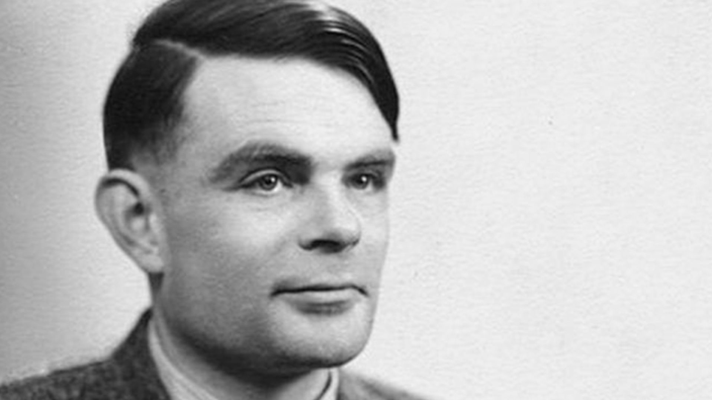

The father of theorical computer science and artificial intelligence

Alan Turing was born at Paddington, London. He was an English mathematician, computer scientist, logician, cryptanalyst, philosopher, and theoretical biologist. Turing was highly influential in the development of theoretical computer science, providing a formalisation of the concepts of algorihm and computation with the Turing machine, which can be considered a model of a general-purpose computer.
He graduated at King's College, Cambridge, with a degree in mathematics. He published a proof demostrating that some purely mathematical yes-no questions can never be answered by computation and defined a turing machine and went on to prove the halting problem for Turing machines is undecidable.
In 1938, he obtained his PhD from the Department of Mathematics at Princeton University. During the Second World War, Turing wored for the government Code and Cypher School at Bletchley Park, Britain's codebreaking centre that produced Ultra intelligence.
After the war, Turing worked at the National Physical Laboratory, where he designed the Automatic Computing Engine, one of the first designs for a stored-program computer.
In 1948, Turing joined Max Newman's Computing Machine Laboratory at the Victoria Univeristy of Manchester, where he ehlped develop the Manchester computers and became interested in mathematical biology. He wrote a paper on the chemical basis of morphogenesis and predicted oscillating chemical reactions such as the Belousov-Zhabotinsky reaction, first observed in the 1960.
Turing was prosecuted in 1952 for homosexual acts. He accepted chemical castration treatment, with DES, as an alternative to prison, Turing died in 1954, 16 days before his 42nd birthday, from cyanide poisoning.
If you have time, you should read more about this incredible human being on his Wikipedia entry.